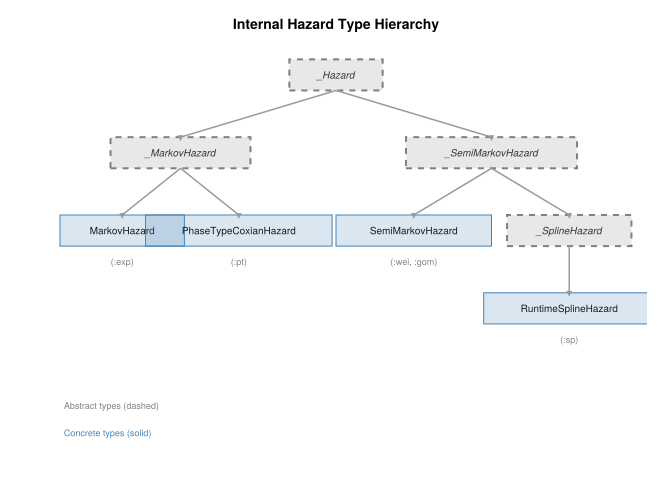
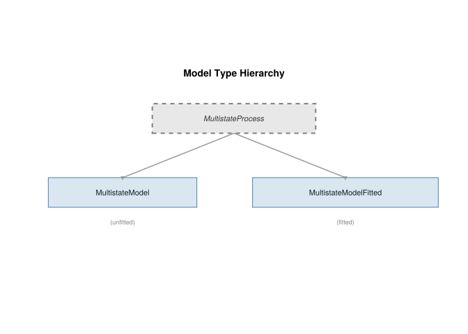
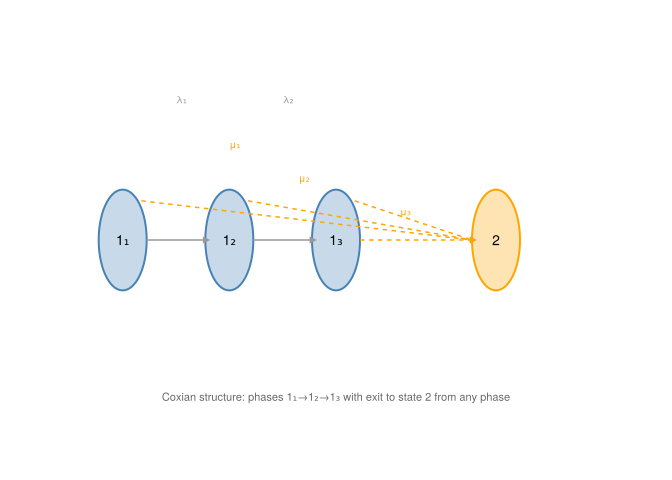

MultistateModels.jl Architecture
Package Structure, Design Patterns, and Implementation Details
Overview
MultistateModels.jl is a Julia package for fitting and simulating continuous-time multistate models. This document provides a comprehensive architectural overview, covering the package structure, type hierarchy, and key implementation patterns.
Package Structure
The package is organized into the following directories:
src/
├── MultistateModels.jl # Main module, exports, includes
├── construction/ # Model construction (multistatemodel function)
├── hazard/ # Hazard functions and evaluation
├── inference/ # MCEM, SIR, fitting algorithms
├── likelihood/ # Log-likelihood computation
├── output/ # Model accessors and variance estimation
├── phasetype/ # Phase-type distributions and FFBS
├── simulation/ # Path simulation
├── surrogate/ # Markov surrogates
├── types/ # Type definitions
└── utilities/ # Parameter handling, validation, miscType Hierarchy
Internal Hazard Types
The package uses an internal type hierarchy for hazard functions that distinguishes between Markov (time-homogeneous) and semi-Markov (sojourn-time-dependent) hazards:
Key insight: PhaseTypeCoxianHazard inherits from _MarkovHazard because the stochastic process on the expanded state space (with latent phases) is Markovian—each phase transition is exponential. The non-exponential sojourn time arises from the mixture over paths through phases, not from any single transition.
Model Types

User-Facing Hazard Specifications
Users specify hazards via HazardFunction subtypes, which are converted to internal types during model construction:
| User Specification | Internal Type | Description |
|---|---|---|
ParametricHazard (:exp) |
MarkovHazard |
Exponential (constant hazard) |
ParametricHazard (:wei, :gom) |
SemiMarkovHazard |
Weibull, Gompertz |
SplineHazard (:sp) |
RuntimeSplineHazard |
B-spline hazard |
PhaseTypeHazard (:pt) |
PhaseTypeCoxianHazard |
Phase-type (Coxian) |
Trait-Based Dispatch
Rather than using the type hierarchy directly, model behavior is determined by trait functions:
is_markov(model) # All hazards are _MarkovHazard?
is_panel_data(model) # Any obstype ≥ 2?
has_phasetype_expansion(model) # Model has phase-type hazards?These traits determine which fitting algorithm is used: - is_panel_data=false → Direct MLE (exact data) - is_panel_data=true && is_markov=true → Matrix exponential MLE - is_panel_data=true && is_markov=false → MCEM
Data Handling
Required Data Format
Data must be a DataFrame with the following columns:
| Column | Type | Description |
|---|---|---|
id |
Int/String | Subject identifier |
tstart |
Float64 | Interval start time |
tstop |
Float64 | Interval end time |
statefrom |
Int | State at tstart |
stateto |
Int | State at tstop |
obstype |
Int | Observation type code |
| covariates | Any | Model-specific covariates |
Observation Types (obstype)
The obstype column controls how each observation contributes to the likelihood:
| Code | Name | Description | Likelihood Contribution |
|---|---|---|---|
| 1 | Exact | Transition time and state observed exactly | Transition density |
| 2 | Panel | State known at tstop, transition time unknown |
TPM entry |
| 0 | Fully censored | State unknown at tstop |
Sum over all states |
| ≥3 | Partially censored | State partially known (see CensoringPatterns) | Weighted sum |
CensoringPatterns
For obstype ≥ 3, you must provide a CensoringPatterns matrix specifying which states are compatible with each censoring code:
# 3-state model with two censoring patterns
# obstype=3: states 1 or 2 possible (not 3)
# obstype=4: states 2 or 3 possible (not 1)
CensoringPatterns = [
# code state1 state2 state3
3 1.0 1.0 0.0;
4 0.0 1.0 1.0
]
model = multistatemodel(h12, h23; data=dat, CensoringPatterns=CensoringPatterns)EmissionMatrix
For maximum flexibility, you can provide an observation-specific EmissionMatrix directly. This is an \((n_{\text{obs}} \times n_{\text{states}})\) matrix where entry \((i, s)\) gives \(P(\text{observation } i \mid \text{state } s)\).
Hazard Families
Parametric Distributions
| Family | Symbol | Parameters | Hazard \(h(t)\) | Markov? |
|---|---|---|---|---|
| Exponential | :exp |
rate \((\lambda)\) |
\(\lambda\) | ✓ |
| Weibull | :wei |
shape \((a)\), scale \((b)\) |
\(\displaystyle\frac{a}{b}\left(\frac{t}{b}\right)^{a-1}\) | ✗ |
| Gompertz | :gom |
shape \((a)\), rate \((b)\) |
\(b \cdot e^{at}\) | ✗ |
| B-Spline | :sp |
coefs \((\beta_1,\ldots,\beta_K)\) |
\(\exp\left(\sum_{k=1}^K B_k(t)\beta_k\right)\) | ✗ (degree>0) |
| Phase-Type | :pt |
\(\lambda_1,\ldots,\lambda_{n-1}\), \(\mu_1,\ldots,\mu_n\) | Coxian absorption | ✓ (expanded) |
Note
Gompertz Parameterization: MultistateModels.jl uses the flexsurv parameterization where shape (\(a\)) is the rate of hazard increase and rate (\(b\)) is the initial hazard at \(t=0\).
Phase-Type Structure
Phase-type hazards (:pt) use a Coxian structure with latent phases:

Key properties:
- Approximate any non-negative distribution arbitrarily well
- The process on the expanded state space is Markovian — hence
PhaseTypeCoxianHazard <: _MarkovHazard - Non-exponential sojourn times arise from the mixture over phase paths
- Parameters: \(\lambda_1, \ldots, \lambda_{n-1}\) (progression), \(\mu_1, \ldots, \mu_n\) (exit)
Covariate Effects
Two covariate effect types are supported:
Proportional Hazards (PH): \[h(t|\mathbf{x}) = h_0(t) \exp(\mathbf{x}'\boldsymbol{\beta})\]
Accelerated Failure Time (AFT): \[h(t|\mathbf{x}) = h_0(t \cdot e^{\mathbf{x}'\boldsymbol{\beta}}) \cdot e^{\mathbf{x}'\boldsymbol{\beta}}\]
# Specify effect type when creating hazards
h12_ph = Hazard(@formula(0 ~ 1 + age), "wei", 1, 2; linpred_effect=:ph)
h12_aft = Hazard(@formula(0 ~ 1 + age), "wei", 1, 2; linpred_effect=:aft)
Warning
The covariate effect types (:ph and :aft) are built into the package. Adding custom effect types requires modifying the hazard generation code—this is not user-extensible.
Parameter Handling
Parameter Structure
Parameters are stored as NamedTuples with multiple representations:
model.parameters = (
flat = [...], # Flat vector on estimation (log) scale
nested = (...), # Nested NamedTuple by hazard
natural = (...), # Natural scale values by hazard
reconstructor = ... # Function to unflatten
)Each hazard’s parameters include: - Baseline parameters (shape, scale, rate, coefs, etc.) - Regression coefficients (if covariates specified)
Scale Transformations
Parameters are estimated on transformed scales for numerical stability:
| Parameter Type | Natural Scale | Estimation Scale | Transformation |
|---|---|---|---|
| Rates, shapes, scales | \((0, \infty)\) | \((-\infty, \infty)\) | \(\log\) |
| Spline coefficients | \((-\infty, \infty)\) | \((-\infty, \infty)\) | Identity |
| Regression \(\beta\) | \((-\infty, \infty)\) | \((-\infty, \infty)\) | Identity |
Transformation by family:
| Family | Parameter | Natural | Estimation | Transform |
|---|---|---|---|---|
| Exponential | rate |
\(\lambda > 0\) | \(\theta \in \mathbb{R}\) | \(\lambda = e^\theta\) |
| Weibull | shape |
\(a > 0\) | \(\theta_a \in \mathbb{R}\) | \(a = e^{\theta_a}\) |
| Weibull | scale |
\(b > 0\) | \(\theta_b \in \mathbb{R}\) | \(b = e^{\theta_b}\) |
| Gompertz | shape |
\(a \in \mathbb{R}\) | \(a\) | Identity |
| Gompertz | rate |
\(b > 0\) | \(\theta_b \in \mathbb{R}\) | \(b = e^{\theta_b}\) |
| Spline | coefs |
\(\boldsymbol{\beta}\) | \(\boldsymbol{\beta}\) | Identity |
# Access parameters in different scales
p_natural = model.parameters.natural # Interpretable values
p_flat = model.parameters.flat # For optimization (log scale)Inference Methods
Fitting Strategy Selection
The fit() function automatically selects the appropriate method based on data and hazard types:

Direct MLE (Exact Data)
For exactly observed data (obstype=1), the likelihood factorizes into transition densities:
\[\mathcal{L}(\boldsymbol{\theta}) = \prod_{i} \prod_{j} h_{s_j \to s_{j+1}}(t_j) \cdot S_{s_j}(t_j - t_{j-1})\]
where \(S_s(t) = \exp(-H_s(t))\) is the survival probability in state \(s\).
Matrix Exponential MLE (Markov Panel)
For panel data with Markov hazards (exponential or phase-type), the likelihood uses transition probability matrices:
\[P(t_0, t_1) = \exp(\mathbf{Q} \cdot (t_1 - t_0))\]
where \(\mathbf{Q}\) is the generator matrix.
Monte Carlo EM (Semi-Markov Panel)
For panel data with semi-Markov hazards (Weibull, Gompertz, degree>0 splines), MCEM is used:
E-step: Sample latent paths via importance sampling using a Markov surrogate
M-step: Maximize expected complete-data log-likelihood with importance weights
Features: - SQUAREM acceleration - Adaptive ESS targeting - Latin Hypercube Sampling (LHS) for variance-reduced resampling
Forward-Filtering Backward-Sampling (FFBS)
FFBS samples latent state sequences given observations. For phase-type models, FFBS operates on the expanded Markov state space, then collapses sampled phases back to observed states.
See the Phase-Type FFBS documentation for details.
Variance Estimation
Three variance estimation approaches are available:
| Method | Description | Pros | Cons |
|---|---|---|---|
| Model-based | Inverse Hessian at MLE | Fast, standard | Assumes correct model |
| Sandwich (IJ) | Infinitesimal jackknife | Robust to misspecification | Requires more computation |
| Jackknife | Leave-one-out refitting | Nonparametric | Computationally expensive |
fitted = fit(model;
compute_vcov=true, # Model-based (default)
compute_ij_vcov=true, # Sandwich estimator
compute_jk_vcov=false # Jackknife (slow)
)Custom Constraints
Users can specify parameter constraints using expressions that reference parameter names:
# Constraint: shape parameter must be ≥ 1
# Constraint: two hazards share the same rate
constraints = make_constraints(
cons = [
:(h1_2_shape - 1), # shape ≥ 1 → (shape - 1) ≥ 0
:(h1_2_rate - h2_3_rate) # Equal rates → difference = 0
],
lcons = [0.0, 0.0], # Lower bounds
ucons = [Inf, 0.0] # Upper bounds
)
fitted = fit(model; constraints=constraints)Parameter naming: h{from}_{to}_{param} (e.g., h1_2_shape, h2_3_rate)
Warning
Variance-covariance matrices are not computed when constraints are active, as the constrained MLE may lie on the boundary of the parameter space.
Simulation Engine
The simulation engine samples complete state trajectories:
- Initialize at starting state and time
- Compute total hazard from current state
- Sample waiting time via inverse CDF
- Sample destination state proportional to hazard rates
- Update state and time
- Repeat until absorbing state or end time
paths = simulate(model; nsim=1000, tmax=10.0)Summary
MultistateModels.jl provides a flexible framework for multistate modeling:
- Type hierarchy:
_MarkovHazardvs_SemiMarkovHazardgoverns fitting method selection - Phase-type hazards are Markovian on the expanded space (not semi-Markov!)
- Trait-based dispatch via
is_markov(),is_panel_data(),has_phasetype_expansion() - Parameters as NamedTuples with flat/nested/natural representations
- Flexible observation handling via
obstype,CensoringPatterns,EmissionMatrix - Three fitting algorithms: Direct MLE, Matrix Exp MLE, MCEM (auto-selected)
- LHS resampling for variance-reduced importance sampling in MCEM